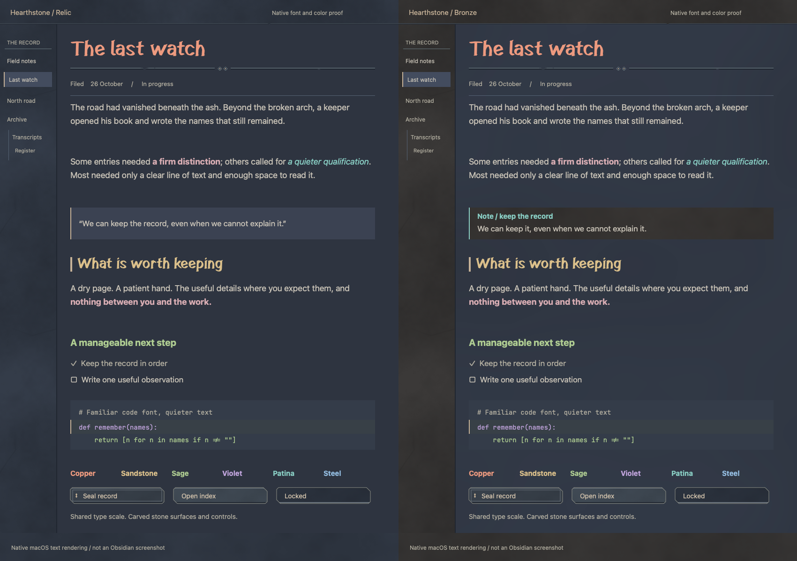

Cairn Ash 1.12
Three editions at one readable type and control scale.
Compare Bronze, Relic, and Everyday beside Nord →
- Everyday: quiet carved details and flat blue reading surfaces.
- Relic: mottled stone furniture and a flat blue page.
- Bronze: a cool slate page with broad mineral clouds, warmer bronze side panes and callouts, and rougher bars.
Paired divider marks are centered without covering the page texture. Sparse chips expose irregular fracture faces; code stays flat and all font preferences are respected.
Try it in Obsidian
Copy any theme folders inside obsidian/ to your vault’s .obsidian/themes/, then choose the edition in Settings → Appearance. Select Cairn or Cairn Mono separately in the font settings if desired.
Full playground · Complete guide · Divider details
Material proof

Representative native font/material drawing, not a running Obsidian screenshot. Tested colors maintain contrast above 4.5:1; subjective comfort still needs your judgment.
Terminal trials
In Finder, double-click Try Hearthstone.command or Try Limestone.command to open a separate Kitty trial window. Close it to return.